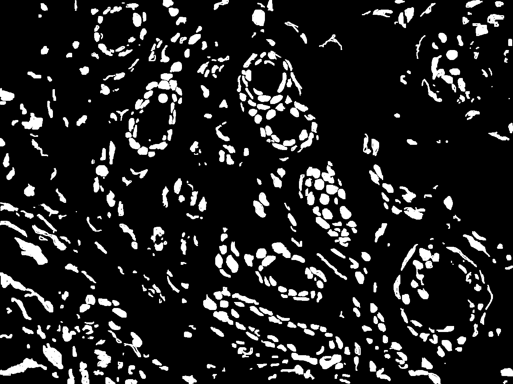

Nuclei semantic segmentation is a key component for advancing machine learning and deep learning applications in digital pathology. However, most existing segmentation models are trained and tested on high-quality data acquired with expensive equipment, such as whole slide scanners, which are not accessible to most pathologists in developing countries. These pathologists rely on low-resource data acquired with low-precision microscopes, smartphones, or digital cameras, which have different characteristics and challenges than high-resource data. Therefore, there is a gap between the state-of-the-art segmentation models and the real-world needs of low-resource settings. This work aims to bridge this gap by presenting the first fully annotated African multiorgan dataset for histopathology nuclei semantic segmentation acquired with a low-precision microscope. We also evaluate state-of-the-art segmentation models, including spectral feature extraction encoder and vision transformer-based models, and stain normalization techniques for color normalization of Hematoxylin and Eosin-stained histopathology slides. Our results provide important insights for future research on nuclei histopathology segmentation with low-resource data.
Two trained annotators, a data scientist (A1) and a post-doc researcher (A2), conducted the annotation process on nuclei segmentation by an expert pathologist to generate the ground truth masks. The annotation protocol was inspired by the CryoNuSeg and MoNuSeg datasets protocols, which was further enhanced by adding a first validation using the masks generated automatically by the FIJI ImageJ software. The annotation process:
Samples of breast, skin, cervical and ingunal and their annotation masks validated by expert 1

Samples of breast, skin, cervical and ingunal and their annotation masks validated by expert 2


The FD-Net model consists of Two Branches:
The best performance achieved a higher average Dice score of 0.830 using both Y-Net with the original AMONuSeg and FD-Net with the StainGAN pre-processed dataset.
@InProceedings{Zer_AMONuSeg_MICCAI2024,
author = { Zerouaoui, Hasnae and Oderinde, Gbenga Peter and Lefdali, Rida and Echihabi, Karima and Akpulu, Stephen Peter and Agbon, Nosereme Abel and Musa, Abraham Sunday and Yeganeh, Yousef and Farshad, Azade and Navab, Nassir},
title = { { AMONuSeg: A Histological Dataset for African Multi-Organ Nuclei Semantic Segmentation } },
booktitle = {proceedings of Medical Image Computing and Computer Assisted Intervention -- MICCAI 2024},
year = {2024},
publisher = {Springer Nature Switzerland},
volume = {LNCS 15009},
month = {October},
page = {pending}
}